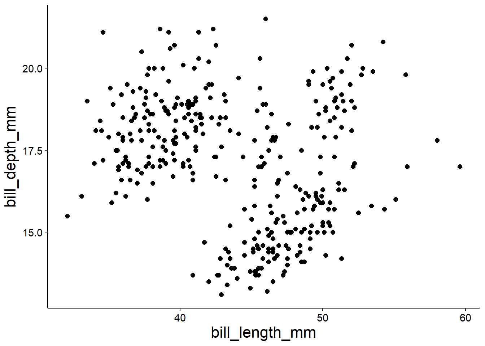
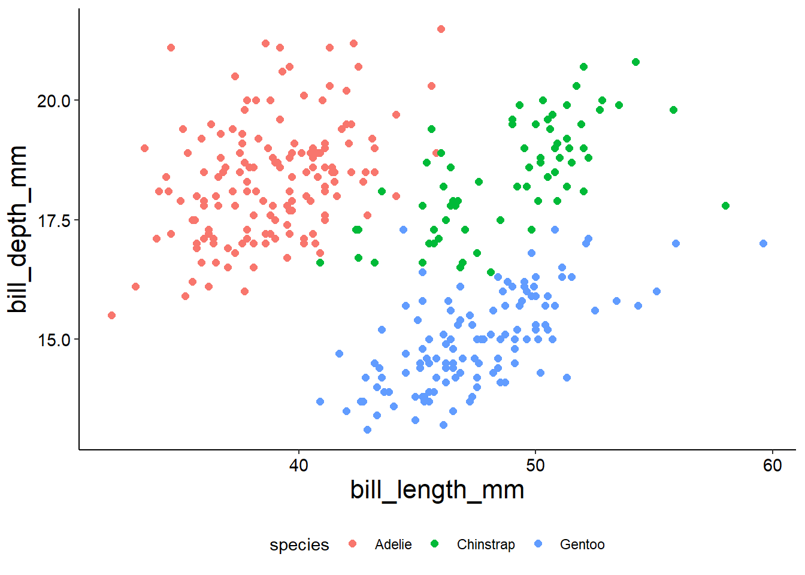
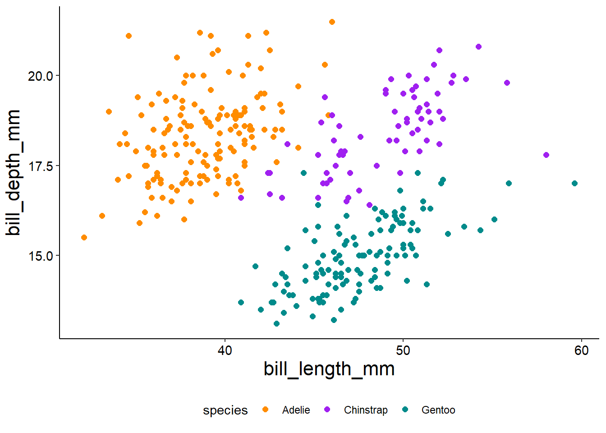
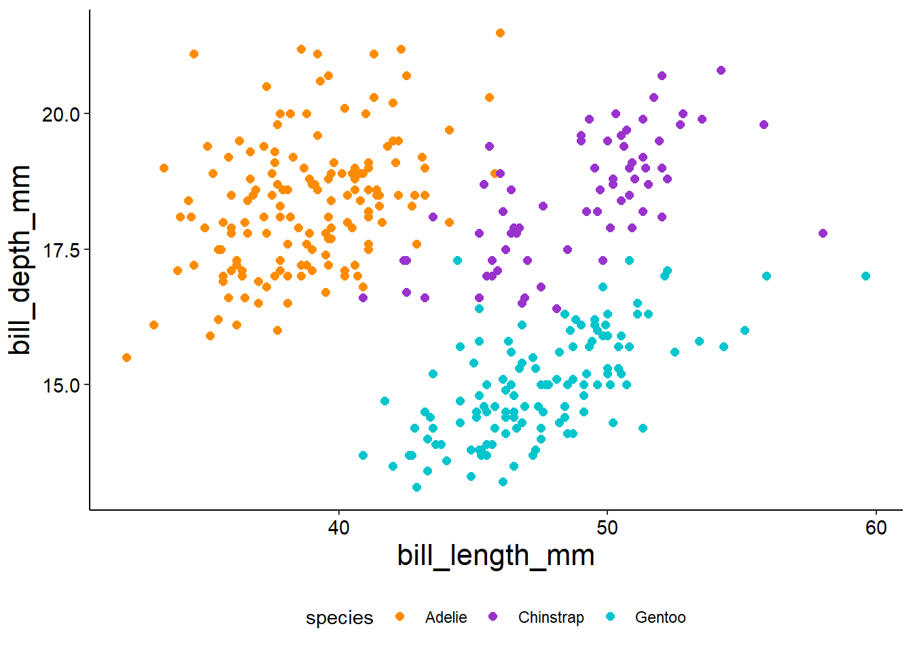
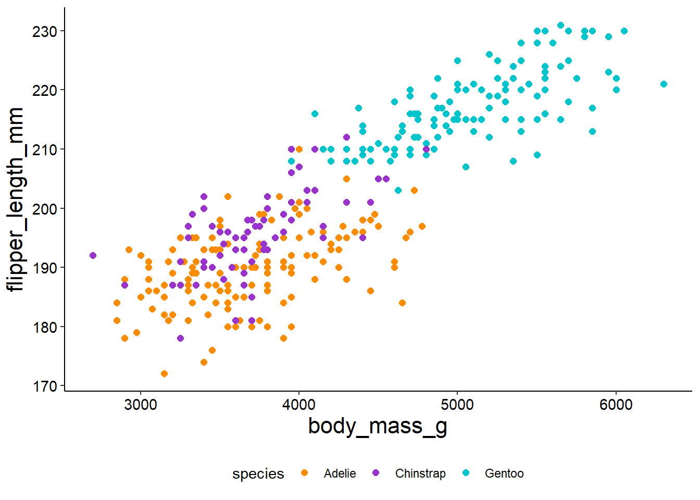
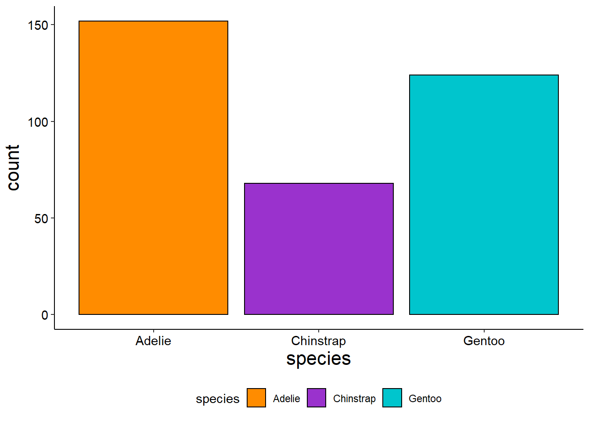
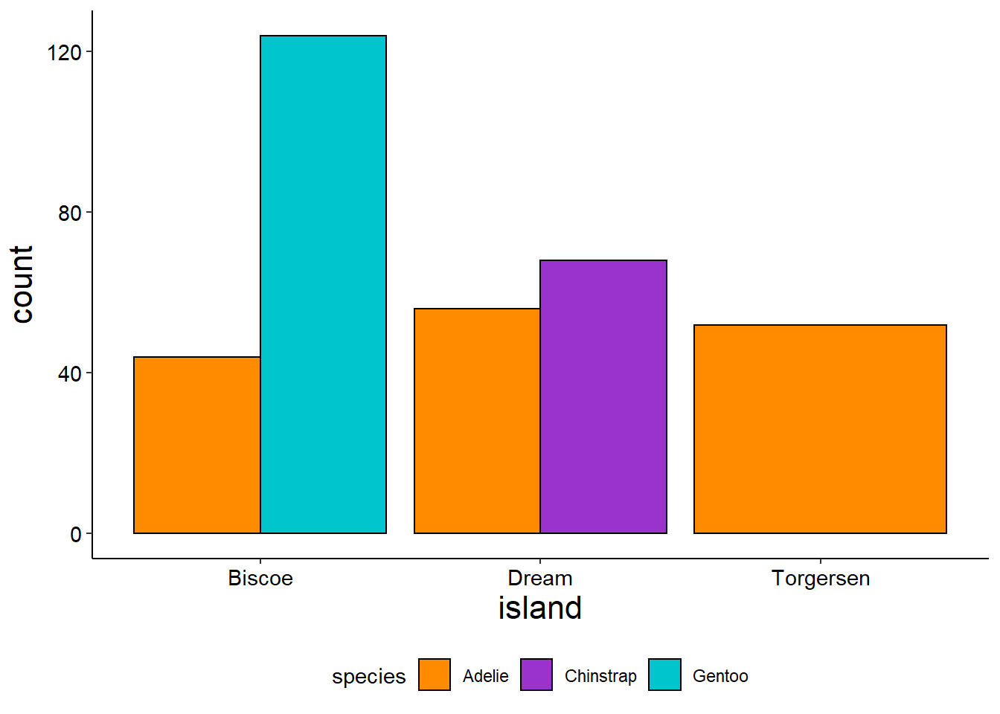
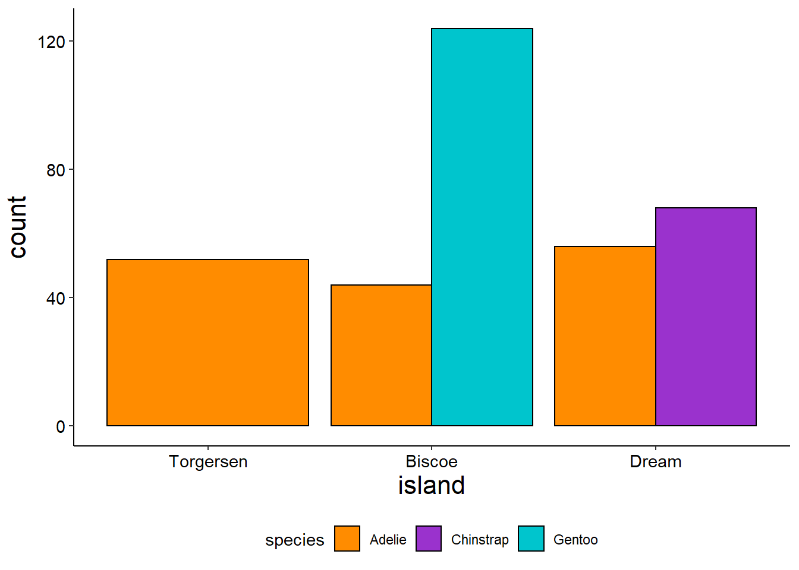

The goal of this project is for you to demonstrate proficiency in the skills you have acquired over the course of this semester (and if you’re adventurous a little bit beyond that), primarily that you can ask meaningful questions, answer them with the results of an appropriate data analysis, present your results in a compelling way, and discuss your conclusions. Additionally, you should be able to discuss the reliability and validity of your data, critic your own methods, and make suggestions on how to improve your approach.
Your final project must demonstrate the following skills:
filter(), select(), joins, mutate(), group_by(), summarize() …)Rmarkdown and then knitted as an html file.Refer to earlier chapters in this lab manual on standards for good visualizations, formatting figures using ggplot, formatting using Rmarkdown, components of a research compendium etc.
Criteria for evaluation of your final project include
Organization of research compendium, reproducibility
You have submitted your project folder with an R project.
All raw data is included.
You have used an Rmarkdown file to reproducibly document your analysis & results.
You have submitted your final report as a knitted html file your code is well organized and commented
Content:
Your broad research question is explicitly stated.
You have selected a relevant data set(s) to answer it and can justify this choice and formulate associated caveats.
You are able to precisely formulate which data analysis steps you are taking and why.
You describe your results and discuss them in context of your question.
You concisely state your central findings and conclusions.
Correctness
You apply an appropriate analysis.
All visualizations are appropriate for the data type and relevant to the question.
Your results are clearly and correctly presented.
Presentation:
Quality of writing: appropriate style, clear, concise and well-structured sentences, correct terminology, syntax, grammar and spelling.
Your presentation is well-structured and easy to follow.
It is clear which steps for analysis were taken and why.
Visualizations have specific point that serves the overall narrative; all figures have titles, labeled axis, colors/shapes & other aesthetics to encode data are used in a meaningful way.
You distinguish between analysis, results, and discussion.
Make sure to suppress warnings, errors, and other messages (you can do this in your setup code chunk for all code chunks in the document) to make your document more readable.
Critical thought/creativity:
Your project is well thought out and it is clear that time & effort went into planning & implementing the project.
You have considered the limitations of your data set and approach.
Your discussion critically assesses your results, puts them into context, and evaluates them in the larger context.
You will submit your entire research compendium including the write-up of your final project.
You will need to create a research compendium and complete your analysis as a Rproj using R and Rmarkdown.
Your research compendium should be organized and your various documents should be well structured, coherent, easy to follow, and clear according to the standards we have established over the semester.
Your final report should have the following structure:
Title
Introduction (2-3 paragraphs):
Introduce relevant key words & concepts and other important background information (remember to include your references!)
Introduce your broad topic/general research question you are asking, including motivation and context.
Describe why your question is relevant/how it would further the understanding of this broad topic you should include an clear, concise & explicit statement of you research question/hypotheses and how you will address it (we have used a standardized way to formulate this for several of our modules, that is a good starting point).
Include references as appropriate.
Study Design
Describe the data sets you intend to use, including what information it contains, how it was collected, and what the source is.
Read in your data set and use skim() to provide an overview of your data
Assess the quality of your data set, consider whether there are specific caveats, the spatial/temporal resolution, subgroups within, how data is encoded. etc.
Analysis and Results
Document your individual steps of analysis; make explicit which steps you are taking and why (how does it contribute to answering your question); orient yourself on the style of our lab manual for interweaving descriptions of steps you are taking and code.
Your code does not need to be commented line-by-line but should include a short comment above each “code set” (combined using the pip %>%).
Use headers to help structure your analysis! Having to formulate a concise subtitle for each step will help you make explicit what your data analysis steps consist of.
You should describe your results after each major data analysis step (again orient yourself on the style of the lab manual/your homework assignment); describe general trends and patterns and highlight notable details (especially if you are going to refer to them later in the discussion)
Discussion (3-4 paragraphs)
Start your discussion by re-stating your central question and concisely summarizing your central findings (again, we have used a formulaic way of writing this up throughout the semester use that format)
Discuss you findings in the context of your research question - interpret them to answer the question, point out caveats & short-comings, consider whether they meet your expectations or whether there are contradictions, explain the patterns that you see; include references as appropriate!
Conclusion (1 paragraph):
Generally, you first code chunk is used to load libraries necessary for running your analysis.
Loading unnecessary libraries can lead to conflicts157 When you have two different libraries with a function with the same name, R does not know which function you are referring to.
There are ways around this when it is unavoidable (we have used two methods over the course, either explicitly calling a function with package and function name (e.g. dply::select() or using the function conflicted::conflict_prefer() ..
Think about what type of analysis you are doing and what packages you will need to load.
The set up code is also a good place to set global settings for your document, e.g. suppressing warnings, errors, and messages usingknitr::opts_chunk$set() .
Further, you can set your preferred ggplot theme using theme_set() so you do not have to type it in every time you make a figure.
If you are creating a vector with a custom color palette (see below) or similar you can also do this in your set up chunk.
Having it all in one spot is really helpful if you want to make changes because you don’t have to search your document and all the code chunks to figure out where you created a setting.
In your introduction and discussion you should add references as appropriate.
Rmarkdown does allow you to add citations.
This involves creating a separate text file with your bibliography (*.bib) in BibTeX.
If you use google scholar, when you pull up the Cite section, clicking on BibTeX at the bottom will open a plain text formatted citation that you can compile into a single file with all your references.
You can then insert citations in Rmarkdown format and a reference section with alphabetically organized and standard formatted references will automatically be generated for you.
You can find details in the Rmarkdown Cookbook.
The second option (this is what I would advise you to do) is to use footnotes.
To create a footnote in Rmarkdown you use the carrot (^) followed immediately by square brackets ([]).
The content in the brackets will be printed as a footnote at the bottom of a page, e.g. ^[This would become the footnote] .
Choose a format (APA, MLA, Chicago …) and stick with it.
A data visualization refers to any type of visual display of data with the goal of helping us better understand the underlying data.
An effective figure should be constructed to highlight and facilitate the understanding of a specific (set of) point(s) in a clear, accessible, transparent, honest, and verifiable way.
Data visualizations are used to tell a story: they should have a specific point that serves the overall narrative and support the description, interpretation & discussion of key results.
an effective figure legend contains a concise, descriptive title, a summary of what data (variables) have been visualized and how (encodings, mapping aesthetics, scales).
an effective description of results points out general, broad-scale trends and highlights important details
an effective discussion reiterates the key results and interprets them, states clear conclusions & take-home messages of an anlysis & points to the figure as evidence thereof.
Data visualizations should be formatted/customized to their anticipated audience and mode of presentation
Data visualizations should be clear, accessible, transparent, and honest.
Checklist:
Did I chose the right type of plot?
Did I label my axes?
Is the font size is sufficiently large & the font readable?
Do colors support the point being made with the figure or distract?
Is the main point clear?
Is it easy for the viewer to make comparisons?
Do my numbers add up?
Do the numbers/figure as a whole represent the data?
Does the y-axis start at 0 for barplots?
Am I misleading the viewer?
Part of making effective figures is checking that they are readable in the knitted document.
If the proportions are off and you need to make the figure wider or taller remember that you can use specify fig.height and fig.width in the curly brackets in the curly brackets at the top of each code chunk, e.g. as
```{r fig.height=10, fig.width=8}
You can use the default colors for ggplot , we have also played with customizing colors a little bit but let’s look at a specific example on how we can easily manipulate colors in figures to make them consistent across visualizations for example if we are consistently comparing the same set of categories.
Let’s load a few packages to get started, including palmerpenguins which contains a handy data set of observations for three species of penguins in the Antarctica.
# turn of sci notation
options(scipen=999)
# load libraries for data import & wrangling
library(tidyverse)
library(janitor)
library(skimr)
# to format tables
library(knitr)
# for data set
library(palmerpenguins)
# pull in penguin data set
peng <- penguinsLet’s take a quick look using skim().
skim(peng)Table 24.1: Data summary
| Name | peng |
| Number of rows | 344 |
| Number of columns | 8 |
| _______________________ | |
| Column type frequency: | |
| factor | 3 |
| numeric | 5 |
| ________________________ | |
| Group variables | None |
Variable type: factor
| skim_variable | n_missing | complete_rate | ordered | n_unique | top_counts |
|---|---|---|---|---|---|
| species | 0 | 1.00 | FALSE | 3 | Ade: 152, Gen: 124, Chi: 68 |
| island | 0 | 1.00 | FALSE | 3 | Bis: 168, Dre: 124, Tor: 52 |
| sex | 11 | 0.97 | FALSE | 2 | mal: 168, fem: 165 |
Variable type: numeric
| skim_variable | n_missing | complete_rate | mean | sd | p0 | p25 | p50 | p75 | p100 | hist |
|---|---|---|---|---|---|---|---|---|---|---|
| bill_length_mm | 2 | 0.99 | 43.92 | 5.46 | 32.1 | 39.23 | 44.45 | 48.5 | 59.6 | ▃▇▇▆▁ |
| bill_depth_mm | 2 | 0.99 | 17.15 | 1.97 | 13.1 | 15.60 | 17.30 | 18.7 | 21.5 | ▅▅▇▇▂ |
| flipper_length_mm | 2 | 0.99 | 200.92 | 14.06 | 172.0 | 190.00 | 197.00 | 213.0 | 231.0 | ▂▇▃▅▂ |
| body_mass_g | 2 | 0.99 | 4201.75 | 801.95 | 2700.0 | 3550.00 | 4050.00 | 4750.0 | 6300.0 | ▃▇▆▃▂ |
| year | 0 | 1.00 | 2008.03 | 0.82 | 2007.0 | 2007.00 | 2008.00 | 2009.0 | 2009.0 | ▇▁▇▁▇ |
We can see that there are three species of penguins, observation where made on three islands from 2007 - 2009 and measurements include bill length and depth, total body mass, flipper length and body mass.
Let’s make a quick plot to explore the relationship of bill length and bill depth
ggplot(peng, aes(x = bill_length_mm, y = bill_depth_mm)) +
geom_point(size = 2)
It looks like we have a few groups present so we might want to color code this plot by species.
ggplot(peng, aes(x = bill_length_mm, y = bill_depth_mm, color = species)) +
geom_point(size = 2)
That gives use the standard ggplot colors.
We can change those using scale_color_manual() and a vector that contains the color values we want to use.
You can either type the values in each time you plot a figure, or if we anticipate making several plots color coded by species, we can create the vector once and then calling the vector using the object name.
ggplot(peng, aes(x = bill_length_mm, y = bill_depth_mm, color = species)) +
geom_point(size = 2) +
scale_color_manual(values = c("darkorange", "purple", "cyan4"))
This is how you would do it by specifying a vector:
# set color for species
color_species <- c("darkorange", "purple", "cyan4")
# plot
ggplot(peng, aes(x = bill_length_mm, y = bill_depth_mm, color = species)) +
geom_point(size = 2) +
scale_color_manual(values = color_species)You can use built in names for colors or you can use the hexidecimal codes instead which means that you can use a color picker to find exactly the color set you want158 If you check the Rstudio Addins drop down menu you will find that there is a built in color picker you can use, too; check out a short demo of using the addin..
# set color for species
color_species <- c("#FF8C00", "#9A32CD", "#00C5CD")
# plot
ggplot(peng, aes(x = bill_length_mm, y = bill_depth_mm, color = species)) +
geom_point(size = 2) +
scale_color_manual(values = color_species)
If we were to make a plot comparing the relationship of body mass and flipper length it would be straightforward to pull up the same set of colors.
# plot
ggplot(peng, aes(x = body_mass_g, y = flipper_length_mm, color = species)) +
geom_point(size = 2) +
scale_color_manual(values = color_species)
Let’s say we wanted to count the number of each species observed and visualize that using a barplot; for consistency we could easily use the same color codes using the specified vector but now we would use scale_fill_manual() .
ggplot(peng, aes(x = species, fill = species)) +
geom_bar(stat = "count", color = "black") +
scale_fill_manual(values = color_species)
Let’s create a similar plot counting the number of each species counted on each island.
ggplot(peng, aes(x = island, fill = species)) +
geom_bar(stat = "count", position = "dodge", color = "black") +
scale_fill_manual(values = color_species)
By default ggplot with order categorical variable alphabetically. But let’s say that we wanted our bar plot above to have our islands ordered as Torgensen, Biscoe and Dream - how can we achieve that?
Well, we need to convert our character vector into a factor, which has explicit levels.
We’ll start by creating a vector that has our values in the order we want them, then we will use mutate() to change the class to an ordered vector (or factor).
# set levels
islands <- c("Torgersen", "Biscoe", "Dream")
# convert data type
peng <- peng %>%
mutate(island = ordered(island, levels = islands))If we re-plot our island counts it will change the sequence.
ggplot(peng, aes(x = island, fill = species)) +
geom_bar(stat = "count", position = "dodge", color = "black") +
scale_fill_manual(values = color_species)
kable()
You might want or need to include some tables.
The best way to get nicely formatted tables is using knitr::kable() .
For example, instead of a bar graph we might want to include counts per island as a table.
Our first option is to first create a new object with the table we want to include and then call kable() with that object as the argument.
table1 <- peng %>%
group_by(island) %>%
count(species) %>%
pivot_wider(names_from = island, values_from = n)
kable(table1)| species | Torgersen | Biscoe | Dream |
|---|---|---|---|
| Adelie | 52 | 44 | 56 |
| Gentoo | NA | 124 | NA |
| Chinstrap | NA | NA | 68 |
Alternatively, you can also just directly manipulate the data.frame in kable using your dplyr verbs like this:
kable(
peng %>%
group_by(island) %>%
count(species) %>%
pivot_wider(names_from = island, values_from = n)
)| species | Torgersen | Biscoe | Dream |
|---|---|---|---|
| Adelie | 52 | 44 | 56 |
| Gentoo | NA | 124 | NA |
| Chinstrap | NA | NA | 68 |
You can also use the caption argument to give your table a caption.
kable(
peng %>%
group_by(island) %>%
count(species) %>%
pivot_wider(names_from = island, values_from = n),
caption = "Number of individuals per species observed on each island."
)Table 24.2: Number of individuals per species observed on each island.
| species | Torgersen | Biscoe | Dream |
|---|---|---|---|
| Adelie | 52 | 44 | 56 |
| Gentoo | NA | 124 | NA |
| Chinstrap | NA | NA | 68 |
Page built: 2021-11-30 using R version 4.0.2 (2020-06-22)
{kind=link}